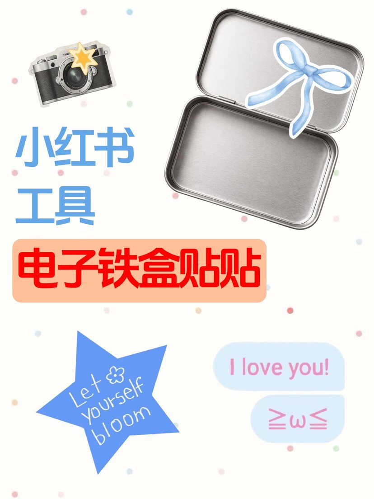
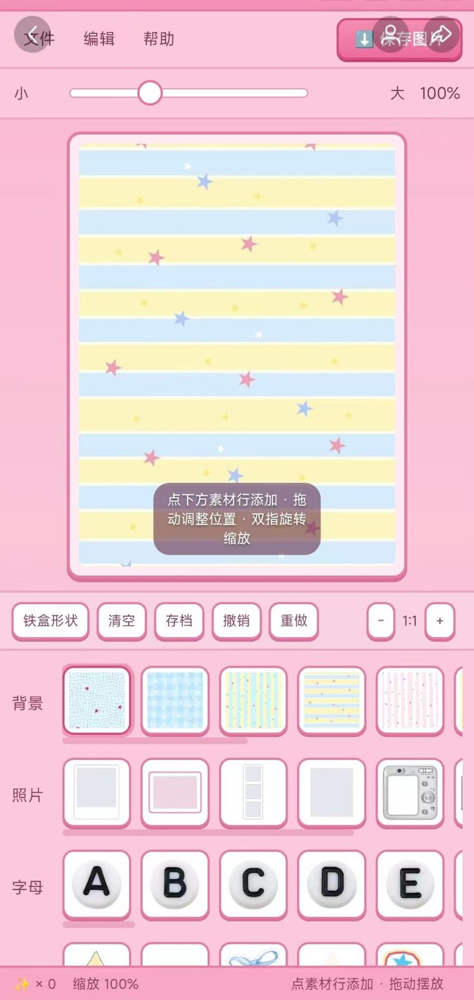
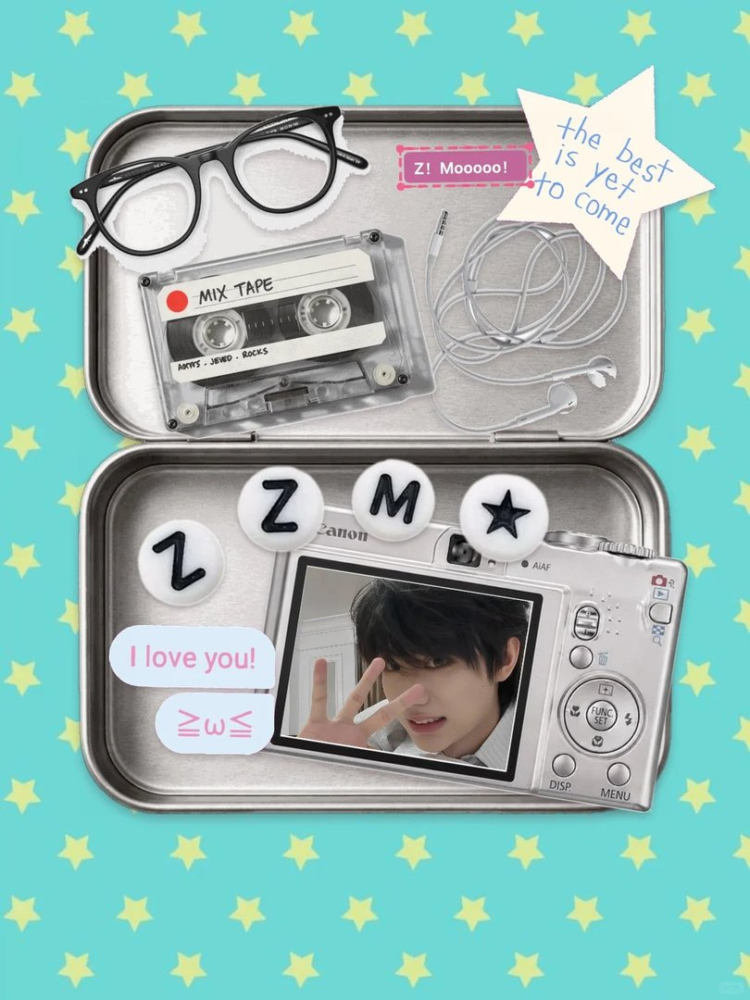
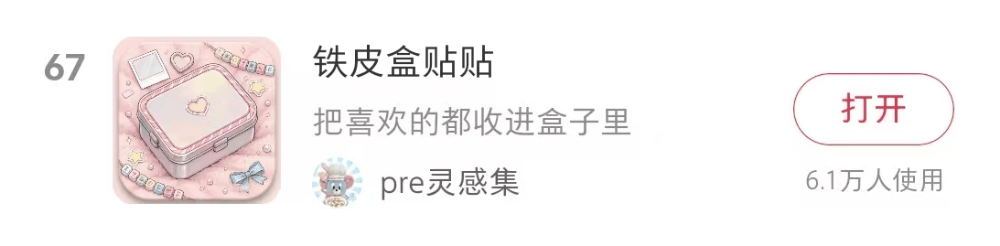
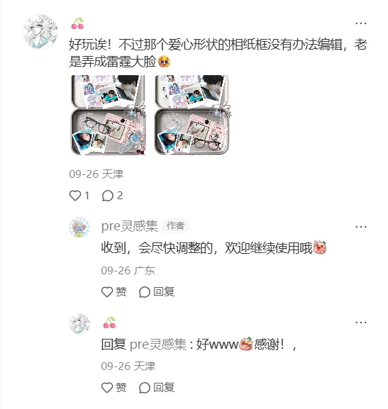
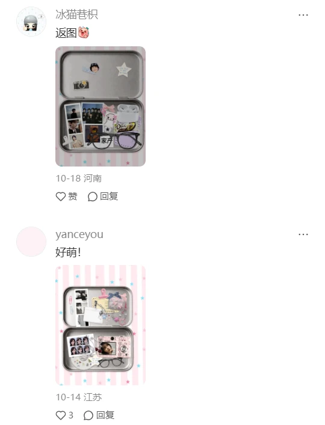
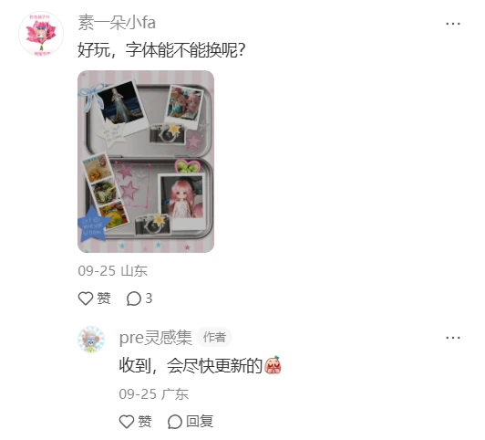
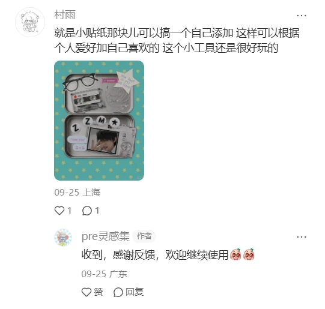
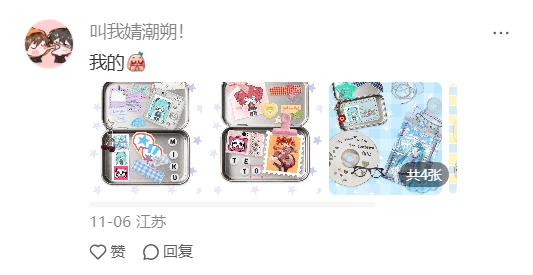

封面用实物，不用界面截图
第一条的封面，右半边是工具界面实拍。这一次我把整个封面交给实物：两只真的铁皮盒、一台真相机、一颗真的星星，没有一个像素来自界面。理由是这类内容的吸引力不在「怎么用」，在「我也想有一个这样的盒子」——实物让人想拥有，截图只让人知道有这么个东西。
结果15.6%封面点击率，比第一条高 2.1 个点
第二个工具：背景、照片、字母贴各一排，拖进一个打开的铁盒，盒盖放什么、盒身放什么自己定，拼好就能导出——不用真买铁盒、不用摆拍。第 12 天发出，曝光 24,490、赞藏 723，封面点击率 15.6% 反超第一条，6.1 万次使用、是观看量的 15.5 倍。

第一条（萌系贴）是单点爆发，我自己在那页写了「不能证明可复制」。要证明这套做法成立，就得再做一次——而且不能是同一套的换皮。
换个动作再打一次：从「往平面上贴」换成「往盒子里放」。工具里背景、照片、字母各一排，拖进盒、缩到合适就能导出。铁盒天生两个格子，用户只需决定这个盒子里放什么。
十二天做出第二条，封面点击率反超第一条，收藏是点赞的 95%。这套「找成本 → 做成工具 → 用内容推出去」的流程可以再走一遍。
萌系贴那条跑起来之后，我在它的详情页里写了一句自我批评：只有一个案例，不能证明可复制。这一页就是补那道题。
所以这次要回答的不是「我能不能做出一个好工具」，而是「同一套做法，换一个题材，还能不能跑起来」。前者可能是一次运气，后者才能拿来做判断——所以这一页只回答后一个问题。
题材我没有沿用贴纸。贴纸的动作是「往平面上贴」，第二个工具如果还是贴，用户会觉得这是同一个东西的换皮。我换成了「往盒子里放」：一个打开的铁皮盒，上下两格，用户把自己的照片、字母贴、贴纸放进去，做成一张「我把喜欢的东西都收进来了」的图。
这个形式在小红书上本来就有人做，但都是实拍实物盒——想把自己的照片塞进去，只能靠摆拍加 P 图。工具把这件事拆成四类素材：铁盒形状、背景、照片、字母，用户不用想构图，只要决定这个盒子里放什么。
边界也写在这里：盒子里只能放平面素材，实物那种厚度和反光给不了；铁盒只有开、合两种状态，装不下第三个格子。它能替掉的是「凑不齐实物也要发一条」的处境，替不掉实拍本身。
第一条的封面，右半边是工具界面实拍。这一次我把整个封面交给实物：两只真的铁皮盒、一台真相机、一颗真的星星，没有一个像素来自界面。理由是这类内容的吸引力不在「怎么用」，在「我也想有一个这样的盒子」——实物让人想拥有，截图只让人知道有这么个东西。
结果15.6%封面点击率，比第一条高 2.1 个点
做第二个工具最省力的办法，是沿用第一个的交互、只换一套素材包。我反过来了：交互结构重写，最先定的东西是那个盒子。因为铁盒天生是两个格子（盖和身），构图不是「居中摆一个主体」，而是上下两块各放什么——用户换的不是滤镜，是这个盒子属不属于自己。
结果4 类素材，上下两层任意组合
字母那一排看起来最不起眼，但它是唯一能让成品变成「我的」的素材。效果图里那个 ZZM★ 就是拼出来的名字。这条也是它能被收藏的原因——不是「好看，存着看」，是「好看，我也想做一张」。
结果353收藏，是点赞的 95%
这一版把操作压在一屏里：素材拖进盒子、拖着缩放，动作按钮就在旁边；没有图层列表，也不用记快捷键。存档能把一版草稿留住，下次接着摆。


这份看板和萌系贴那页一样，是小红书创作中心导出的两份明细合起来做的：一份流量表（曝光、观看、点击率、时长、涨粉），一份互动表（点赞、评论、收藏、分享）。两边字段不重叠，拼起来才是一条完整的笔记。
第 2 天到顶（1,831），第 6 天掉到 314。国庆假期（第 7 天）起了第二波。这条不是一路上涨，是「先被推一次，掉下来，再被找一次」。
第一波高峰时点击率反而最低（11–12%），第二波最高（18–19%）。被系统推出去的人，和主动找来的人，点击意愿差一截。
两根柱子几乎等高，十月六日到八日收藏甚至比点赞多。这是「我要自己做一张」的形状，不是「这个好看」的形状。
15.6% 的人点进来；进来的人里 21.7% 会点赞或收藏；每 1,000 次观看换来 9.6 个粉丝，是第一条的两倍。
条形长度按对数缩放，只为让末端看得见；右侧百分比是真实转化率。
发布即峰 · 3 天
4,62437.6%
曝光集中在头三天，第二天单日最高 1,831。
回落 · 3 天
1,36011.1%
第 6 天掉到 314。这个阶段最容易误判成「不行了」。
第二波 · 4 天
3,47228.2%
国庆假期，点击率同时冲到 18–19%，两条线一起出现第二个峰。
长尾 · 5 天
2,84923.1%
五天从 895 一路回落到 309，但没归零。
353 收藏对 370 点赞，比第一条的 74% 还高一截；十月六日到八日，收藏甚至连续三天超过点赞。人点赞是「好看」，收藏是「我也想做一张」——这条的工具属性更纯。
粉丝只占 2.3% 曝光，却贡献 4.6% 观看，倒推粉丝点击率约 32%，是路人（15.7%）的两倍。可惜量太小撑不起数据——这条还是公域跑出来的。
15 天 12,305 次曝光，全周期 24,490 次。剩下一半发生在日粒度明细截止之后，靠搜索和收藏夹被二次打开。
第一条是 4.6 个，这条翻了一倍。收藏率高、涨粉率高，其实是同一个信号：看的人不是看个热闹，是想自己也做一张。
这条没拿到流量激励，但进了小红书「图像类创作小工具」排行榜。榜单截图原样贴在这里。

它和萌系贴那张榜单截图可以对着看：那边第 55 名、十万人在用，这边第 67 名、六万一千人在用。排名和使用量是同向的，看起来这个榜就是按使用量排的——如果按笔记的点赞收藏排，这两条的先后会反过来（萌系贴 7,701 赞藏，这条 723）。
「6.1 万」这个数字比这条笔记自身的量有意义得多。观看只有 3,941，使用量是它的 15.5 倍；萌系贴那条是 3.9 倍。倍数更高，说明这条的工具属性更纯：看笔记的人少，但打开工具自己动手的人多。
我也没把它算成自己的成绩。名次和使用量都是平台侧的结果，我能控制的只有工具本身——盒子得真能装东西、真能出图，才可能被收录、被留下来用。这一条和上一条的区别只在于：它是同一套方法又走了一遍的结果。
榜单和数字都是平台在记。真正决定这个盒子好不好用的，是评论区那 6 位用户、6 条留言。五张截图原样放在下面，一条没删：三条在提需求，三条在晒自己贴的盒子。
6 条留言3 条提需求3 条是返图3 条当天回复





三条提需求的留言，我全在当天回了，回的是「收到，会尽快调整」。第一位用户随后回了一句「好www，感谢」——她接受了这个答复，但那时候功能确实还没改。
三条需求看着分散，其实是同一件事：素材和参数都没交出去。框的样式只能选我给的、字只能用它自带的、贴纸库里没有的她加不进来。用户要的是能改，不只是能选。这一条比萌系贴那页更清楚：那边是合成效果不好，这边是能选的东西太少。
所以下一版的方向也定了：贴纸框可编辑、字体可选、素材自己上传。但这一节要诚实说清楚一件事：6 条留言对 6.1 万次使用，留言的人不到万分之一。它只能证明有人认真用过、并且愿意为它花一句话，不能证明大部分用户怎么想——真正沉默的那批人，我手上没有他们的声音。
这一页是为「可复制」作证的，所以更要把不能证的部分说清楚。
绝对量小，只有第一条的 12.7%。24,490 次曝光对 192,294 次，差着将近八倍。它能证明「换一个题材也能做起来」，不能证明「每次都能做到那个量级」。
归因不干净。封面从「界面实拍」换成「实物摆拍」的同时，题材也从贴纸换成了铁盒——两个变量一起动，点击率高出 2.1 个百分点到底是封面起作用还是题材起作用，我拆不出来，因为没做 A/B。
数据本身有缺口。完播率、两秒退出率导出仍是 0，判为未采集；粉丝点击率（32%）是我用曝光占比和观看占比倒推的，不是原始指标；小时粒度明细只到九月二十八日，后面的判断只能用日粒度。